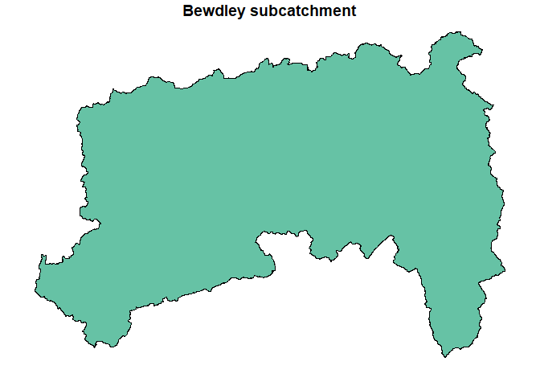
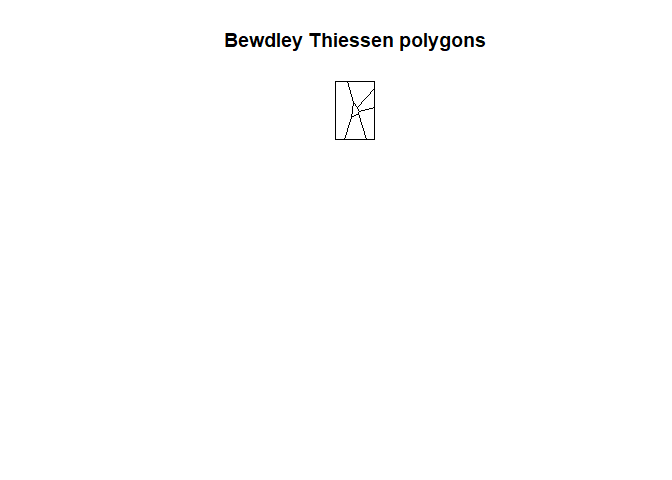
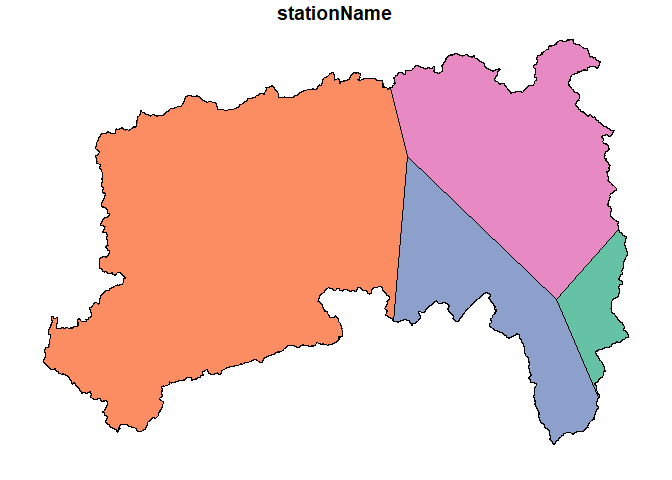

The mappER library is part of the flode collection of tools. It provides all the mapping functionality required for developing flood forecast models.
Installation
You can install the development version of mappER from GitHub with:
# install.packages("devtools")
devtools::install_github("JonPayne88/mappER")Example 1 - Collating spatial data
Datasets of class HydroImport or HydroAggs derived from the riskyData can be compiled into a shapefile.
library(mappER)
library(riskyData)
data(crowle); data(bickley); data(barnhurst); data(hollies); data(ledbury);
data(bettwsYCrwyn)
gcs <- getCoords(crowle,
bickley,
barnhurst,
hollies,
ledbury,
bettwsYCrwyn)
gcs
#> Simple feature collection with 6 features and 4 fields
#> Geometry type: POINT
#> Dimension: XY
#> Bounding box: xmin: -3.172591 ymin: 52.0317 xmax: -2.097173 ymax: 52.7993
#> Geodetic CRS: WGS 84
#> stationName WISKI Easting Northing geometry
#> 1 Crowle 457592 393455 255757 POINT (-2.097173 52.2)
#> 2 Bickley 445031 363130 271330 POINT (-2.542565 52.33879)
#> 3 Barnhurst 091266 389910 301620 POINT (-2.15044 52.61225)
#> 4 Hollies 091862 381586 322452 POINT (-2.274545 52.7993)
#> 5 Ledbury 459793 370233 237123 POINT (-2.435301 52.0317)
#> 6 Bettws-Y-Crwyn 441011 320360 281360 POINT (-3.172591 52.4244)These can be integrated into interactive plots with leaflet.
Example 2 - Thiessen polygons and calculate catchment Proportions
# Import catchment polygon
data("bewdCatch")
# Calculate Voronoi/Thiessen polygon
bewdTeeSun <- teeSun(gaugeCoords = gcs, catchment = bewdCatch)
Intersect the catchment polygon with the Thiessen polygons;
int <- intersectPoly(coords = gcs,
voronoi = bewdTeeSun,
catchment = bewdCatch)
plot(int, max.plot = 1, main = "Intersected catchment polygon")
From this we can calculate the gauge proportions with the gaugeProp() function;
gaugeProp(gcs, bewdCatch)
#> Gauge WISKI Area Proportion
#> 1: Bettws-Y-Crwyn 441011 2465.18 57.127827
#> 2: Hollies 091862 1050.89 24.353217
#> 3: Bickley 445031 632.26 14.651928
#> 4: Barnhurst 091266 166.87 3.867028These can then be inserted into rain gauge catchment averaging equations.